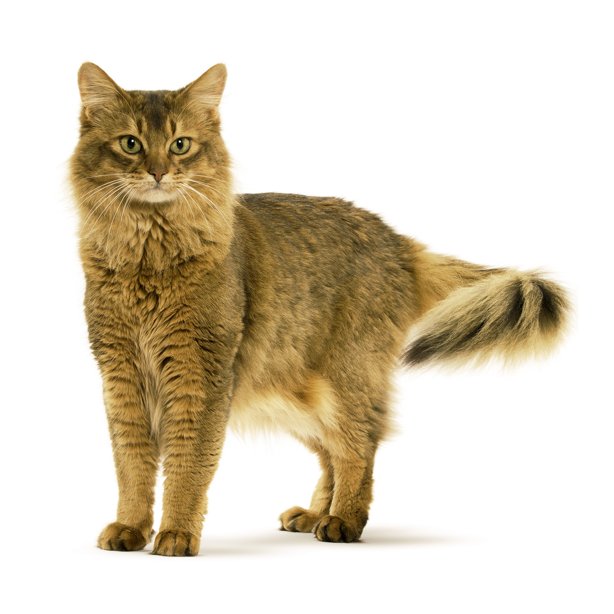

Сомалийская
Характеристика
| Образ жизни | На улице \ В помещении |
| Тип шерсти | Длинношерстная |
| Размер | Средний |
| Образ жизни | На улице \ В помещении |
| Тип шерсти | Длинношерстная |
| Размер | Средний |
Сомалийская кошка – длинношерстная разновидность абиссинской: у нее такое же грациозное и гибкое тело (среднего или крупного размера) и выразительная морда. Однако есть и отличия. От абиссинцев она отличается более длинной шерстью, часто с пышным воротником и густо опушенным хвостом, похожим на лисий. В периоды между линьками и будучи в хорошей форме эти животные выглядят очень благородно. Окрасы могут быть совершенно разными, но в каждом из них обязательно присутствует тикинг.
Яркий характер сомалийской кошки удивительным образом сочетается с ее красотой. Это очень умные и игривые питомцы, живо интересующиеся своим окружением. Эти представители кошачьих – идеальный образец животного-компаньона. Во время игры они бодры, энергичны и любознательны, а когда наступает время отдыха, с удовольствием принимают внимание и ласку владельца.
История не сохранила подробностей происхождения сомалийского кота: точно не известно, как и когда впервые произошло проявление генетического признака длинношерстности. Однако этот признак время от времени проявлялся в пометах абиссинцев в разных странах. Обычно кошек и котов породы сомали с такими внешними данными исключали из разведения. Но в 60-е годы XX века заводчики из Канады и США решили сформировать на их основе отдельную породу. В 1978 году порода была признана ассоциацией CFA, а к настоящему времени получила признание во всем мире. Тогда же был принят стандарт и составлено описание породы сомалийских кошек. Название им дали в честь Сомали – страны, граничащей с Эфиопией – предположительной родиной абиссинцев.